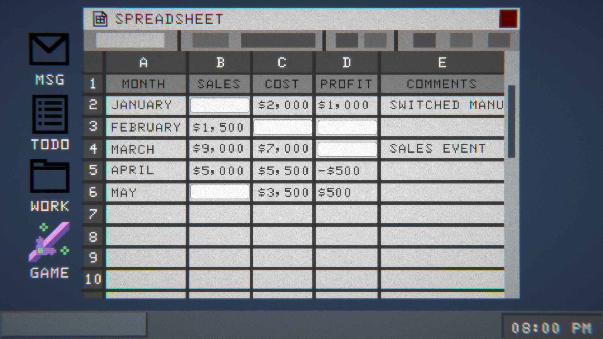

My goal with this prototype was to get feedback regarding the balance of the two “game modes” that I
intended to have
within the game. The guiding question was “how can I add two drastically different modes to one game and
have the game
as a whole feel cohesive”? I didn’t want for the switch between the two kinds of gameplay to feel so jarring
that the
player is distracted or put off from the experience.
Much of my prototype from this week kept the office sim section largely the same, as I felt I had gotten
enough feedback
to guide that segment from my last prototype, and wanted to use my time elsewhere. So here it more or less
served to
prop up the new fantasy segment and provide the dynamic that I would be testing.
In terms of new things added, I added in the bridge between the two sections through the messages from the
friend in the
messenger application. I added in a button disguised as a text bubble that, when clicked, made the game icon
appear on
the desktop UI. Clicking on this icon would lead to the fantasy world segment of the game, though for now
there isn’t a
way to return back. Most people seemed to react positively to this, saying they felt it made sense within
the context of
the game and did feel like it led to a more lighthearted kind of “escape” from the work, which is what I
intended. Some
feedback I got also recommended that I didn’t have this message appear right off the bat, forcing the player
to complete
some of the work minigames before being able to download the game, which was pretty in line with what I
intended once I
was able to make more of a “timeflow” within the game. Another playtester commented that they hadn’t clicked
on the icon
but still got brought to the game segment regardless, which seems to be a bug that I will need to look into.

Upon being loaded into the game, the player is first greeted with a black screen, signaling the game booting
up while
also allowing for the adjustment into the game world to occur kind of gradually. Once the game fades in, the
player is
greeted with a CG image of the character who will serve as their “companion”, leaning over them to check on
the player
as they have just woken up in the woods. The player clicks through the dialogue and is asked to make their
first choice.
Many playtesters seemed kind of stunned or surprised by this change, but seemed excited after the initial
shock wore
off. When questioned about how this felt, all playtesters commented that the shift felt good, not too
jarring or
disorienting.
The CG fades into a more typical “sprite against a backdrop” style that I feel is more common among visual
novels. Here
alongside the lead up into the story I also wanted to showcase some of the companion character’s, Noxx’s,
personality,
in hopes of getting some feedback on them as well. Most people felt warmly about them, commenting that Noxx
felt like
someone trustworthy and that they wanted to see more of, which was very encouraging. Aside from that I
wanted to
experiment with changing expressions, to make it seem more animated, though eventually I do want to add more
effects to
emphasize the narrative and keep the player engaged, Ace Attorney style but perhaps a little less over the
top. I also
added in a text box allowing the player to input their name, hoping that it would make the player feel more
invested and
identify with the game more. But some players seemed hesitant to type their name, or opted to use a
different name. I
wonder if the context of playing the game while being observed made people nervous to “play as themselves”,
especially
without fully understanding the scope of the narrative. I’m not so sure this is a negative thing, but it was
interesting
to observe.
For this playtest I prioritized the aesthetics and narrative over the technical as I put most of my focus on
laying out
the groundwork for the story I wanted to tell and how it would relate to the work portion and the game as a
whole. I
wrote down as much as I could in terms of what I had already in mind and got some feedback from a couple of
friends who
DM in tabletop RPGs, one of whom has a degree in creative writing, help me find a direction to move further
in, and got
a lot of helpful feedback and references to look at.
Some other more general feedback I had gotten during the playtests often included timing elements, like having interruptions from either world occur when you are in the other, which I think could be interesting to try out. I also got a little bit of feedback regarding how some players were unsure about the “game within a game” and whether this was meant to represent some form of reality for the player character or if it was a layered game like how I meant for it to be. I could potentially clarify this further, but I wonder if it really matters that much? Perhaps this is something that would require more playtesting to see.
I feel pretty pleased with the reactions to the fantasy world segment and the transition into said fantasy world. It seems like people registered that this was meant to be the “better half” of the game, and got excited to see more of it. This was a big element to this game, so I’m glad it seems to be working out. Due to the feedback I’ve received as well as the general direction I’ve been heading towards, I feel the next thing to work on would be switching between scenes and adding flow/time to the game, having a bit more interactivity and allowing the player to progress a bit more within both narratives.
Notes from Playtests (I forgor to take photos
qwq):

The only couple of things I added to the office segments were small things to add clarity for the gameplay
and to show
intent for future adjustments, which are shown above. The first adjustment was to add a blinking cursor to
the “Document
to Finish”, though I hadn’t added the code to make it move along with the speed of typing. I got some good
advice during
a playtest on how to approach this, suggesting I look into monospace fonts(this one might be? I’m unsure,
but the
italics are also potentially messing with this). I also simplified the numbers used in the spreadsheet,
which seemed to
help a lot (though one playtester also commented that the math seemed simple… may be a good idea to ramp up
difficulty
as the game progresses?). In terms of everything else, I got pretty much the same feedback: window layering
needs to be
fixed, scrollbars should actually work, it would be nice to interact with the messaging system, etc. The one
piece of
unique feedback I got came from my father(who never plays games) when I showed him this game over the
weekend. He
suggested that I look up actual SEC Filings and 10Q/10K documents, which are surprisingly easy to access.
This could
potentially provide more clarity on how to format office documents so they are more intuitive and relatable,
so I think
it’s worth looking into.
Some other more general feedback I had gotten during the playtests often included timing elements, like having interruptions from either world occur when you are in the other, which I think could be interesting to try out. I also got a little bit of feedback regarding how some players were unsure about the “game within a game” and whether this was meant to represent some form of reality for the player character or if it was a layered game like how I meant for it to be. I could potentially clarify this further, but I wonder if it really matters that much? Perhaps this is something that would require more playtesting to see.
I feel pretty pleased with the reactions to the fantasy world segment and the transition into said fantasy world. It seems like people registered that this was meant to be the “better half” of the game, and got excited to see more of it. This was a big element to this game, so I’m glad it seems to be working out. Due to the feedback I’ve received as well as the general direction I’ve been heading towards, I feel the next thing to work on would be switching between scenes and adding flow/time to the game, having a bit more interactivity and allowing the player to progress a bit more within both narratives.